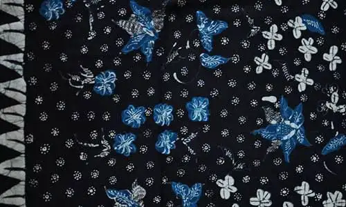
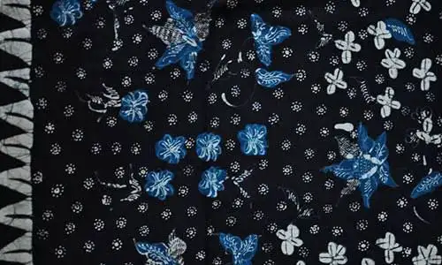

Asal Usul dan Keindahan Batik
Batik merupakan warisan budaya Indonesia yang telah diakui dunia oleh UNESCO. Motif dan warna batik menggambarkan filosofi kehidupan masyarakat Indonesia. Warna biru dan hitam pada batik melambangkan ketenangan, kesetiaan, dan kekuatan jiwa.


 
